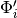
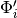
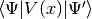

ObservablesMixedHAWP¶
About the ObservablesMixedHAWP class¶
The WaveBlocks Project
@author: R. Bourquin @copyright: Copyright (C) 2010, 2011, 2012, 2013, 2014, 2015, 2016 R. Bourquin @license: Modified BSD License
Inheritance diagram¶

Class documentation¶
-
class
WaveBlocksND.ObservablesMixedHAWP(*, innerproduct=None, gradient=None)[source]¶ This class implements the mixed case observable computation
 for Hagedorn
wavepackets
for Hagedorn
wavepackets  where the bra does not equal
the ket
where the bra does not equal
the ket  .
.-
kinetic_energy(wavepacket, *, component=None, summed=False)[source]¶ Compute the kinetic energy
 of the different components
of the different components  of the wavepacket .
of the wavepacket .Parameters: - wavepacket (A
HagedornWavepacketBasesubclass instance.) – The wavepacket of which we compute the kinetic energy. - component (Integer or
None.) – The index of the component whose
kinetic energy we compute. If set to
of the component whose
kinetic energy we compute. If set to Nonethe computation is performed for all components.
components. - summed (Boolean, default is
False.) – Whether to sum up the kinetic energies of the individual
components .
of the individual
components .
Returns: A list of the kinetic energies of the individual components or the overall kinetic energy of the wavepacket. (Depending on the optional arguments.)
Note
This method just expands to a call of the
ObservablesMixedHAWP.kinetic_overlap_energy()method. Better useObservablesHAWP.kinetic_energy().- wavepacket (A
-
kinetic_overlap_energy(pacbra, packet, *, component=None, summed=False)[source]¶ Compute the kinetic energy overlap
 of the different components and  of the
wavepackets and .
of the different components and  of the
wavepackets and .Parameters: - pacbra (A
HagedornWavepacketBasesubclass instance.) – The wavepacket which takes part in the kinetic energy integral. - packet (A
HagedornWavepacketBasesubclass instance.) – The wavepacket which takes part in the kinetic energy integral. - component (Integer or
None.) – The index of the components of
and of which take part in the
kinetic energy integral. If set to Nonethe computation is performed for all components of and . - summed (Boolean, default is
False.) – Whether to sum up the kinetic energies of the individual
components and .
Returns: A list of the kinetic energy overlap integrals of the individual components or the overall kinetic energy overlap of the wavepackets. (Depending on the optional arguments.)
- pacbra (A
-
norm(wavepacket, *, component=None, summed=False)[source]¶ Calculate the
 norm
norm  of the wavepacket .
of the wavepacket .Parameters: - wavepacket (A
HagedornWavepacketBasesubclass instance.) – The wavepacket of which we compute the norm. - component (int or
None.) – The index of the component whose norm is computed.
The default value is Nonewhich means to compute the norms of all components. - summed (Boolean, default is
False.) – Whether to sum up the norms of the
individual components .
of the
individual components .
Returns: The norm of
or the norm of or a list with the
norms of all components. (Depending on the optional arguments.)Note
This method just redirects to a call to
HagedornWavepacketBase.norm().- wavepacket (A
-
overlap(pacbra, packet, *, component=None, summed=False)[source]¶ Calculate the overlap
 of the wavepackets
and .
of the wavepackets
and .Parameters: - pacbra (A
HagedornWavepacketBasesubclass instance.) – The wavepacket which takes part in the overlap integral. - packet (A
HagedornWavepacketBasesubclass instance.) – The wavepacket which takes part in the overlap integral. - component (Integer or
None.) – The index of the components of
and of whose overlap is
computed. The default value is Nonewhich means to compute the overlaps with all components involved. - summed (Boolean, default is
False.) – Whether to sum up the overlaps of the individual components and .
of the individual components and .
Returns: The overlap of
with or the overlap of
with or a list with the overlaps of all components.
(Depending on the optional arguments.)- pacbra (A
-
potential_energy(wavepacket, potential, *, component=None, summed=False)[source]¶ Compute the potential energy
 of the different components of the wavepacket .
of the different components of the wavepacket .Parameters: - wavepacket (A
HagedornWavepacketBasesubclass instance.) – The wavepacket of which we compute the potential energy. - potential – The potential
 . (Actually, not the potential object itself
but one of its
. (Actually, not the potential object itself
but one of its V.evaluate_*methods.) - component (Integer or
None.) – The index of the component whose
potential energy we compute. If set to Nonethe computation is performed for all components. - summed (Boolean, default is
False.) – Whether to sum up the potential energies of the individual
components .
Returns: A list of the potential energies of the individual components or the overall potential energy of the wavepacket. (Depending on the optional arguments.)
Note
This method just expands to a call of the
ObservablesMixedHAWP.potential_overlap_energy()method. Better useObservablesHAWP.potential_energy().- wavepacket (A
-
potential_overlap_energy(pacbra, packet, potential, *, component=None, summed=False)[source]¶ Compute the potential energy overlap  of the different components
and of the
wavepackets and .Parameters: - pacbra (A
HagedornWavepacketBasesubclass instance.) – The wavepacket which takes part in the potential energy integral. - packet (A
HagedornWavepacketBasesubclass instance.) – The wavepacket which takes part in the potential energy integral. - potential – The potential . (Actually, not the potential object itself
but one of its
V.evaluate_*methods.) - component (Integer or
None.) – The index of the components of
and of which take part in the
potential energy integral. If set to Nonethe computation is performed for all components of and . - summed (Boolean, default is
False.) – Whether to sum up the potential energies of the individual
components and .
Returns: A list of the potential energy overlap integrals of the individual components or the overall potential energy overlap of the wavepackets. (Depending on the optional arguments.)
- pacbra (A
-
set_gradient(gradient)[source]¶ Set the gradient.
Parameters: gradient (A Gradientsubclass instance.) – A gradient operator. The gradient is only used for the computation of the kinetic energy.
-
set_innerproduct(innerproduct)[source]¶ Set the innerproduct.
Parameters: innerproduct (A InnerProductsubclass instance.) – An inner product for computing the integrals. The inner product is used for the computation of all brakets.Note
Make sure to use an inhomogeneous inner product here.
-